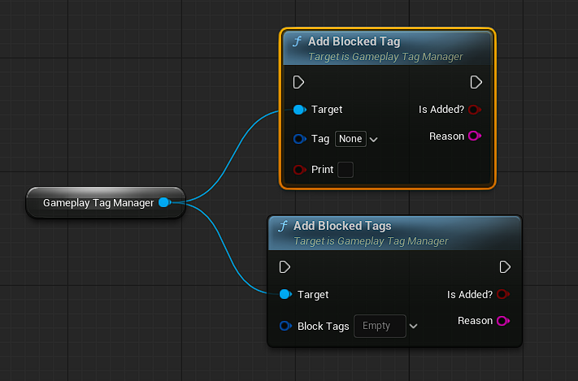

AddActiveTag()
Adds a single Gameplay Tag to the Active Layer.
This operation performs full validation before adding the tag to ensure system stability and predictable behavior.
Input: Tag(GameplayTag) → Tag we want to add.
Input: Print(bool) → To print debug messages for development.
Output: IsAdded(bool) → To use it for conditions.
Output: Reason(String) → To print Reason to know success or why fail or just use Print(True)
Validation Steps:
When calling this function, the system automatically checks:
Check Duplicated
1. If the tag exists in Active or Blocked layer → operation fails.
Permanent Layer Rule Check
Permanent tags always override; conflicts are respected.
Bi-Directional Conflict Rules
The system checks both:
Active tags conflicting with the new tag
New tag conflicting with active tags
Ensures consistency even if the user forgets to define the reverse rule.
AddActiveTags(Array)
Adds multiple tags into the Active Layer in a single batch operation.
Each tag is validated independently using the exact same logic as AddActiveTag().
Input: Tags(GameplayTagContainer) → Tags we want to add.
Behavior:
*Tags are added sequentially
*Failed tags do NOT stop the batch
Each tag runs:
*Block check
*Permanent check
*Conflict rules (bi-directional)
*Duplicate prevention

AddBlockedTag()
Adds a single Gameplay Tag to the Blocked Layer.
Blocked Tags immediately prevent any tag from being activated if it appears in this list.
This layer has the highest priority in the system.
Input: Tag(GameplayTag) → Tag we want to add.
Input: Print(bool) → To print debug messages for development.
Output: IsAdded(bool) → To use it for conditions.
Output: Reason(String) → To print Reason to know success or why fail or just use Print(True)
Validation Steps
When you call AddBlockedTag, the system performs:
Permanent Layer Check
Permanent tags cannot be blocked.
If the user tries → operation fails.
Duplicate Prevention
If the tag is already in Blocked or Active → operation fails silently.
(Ensure you removed it from active layer before add to blocked tags.)
Behavior
When a tag becomes blocked:
It cannot be added to Active.
Any function attempting to activate the tag will fail.
Used for restricted areas, forbidden actions, global silencing, etc.
Best Use Cases
Restricted zones (disable weapon usage, jumping, aiming…)
Cutscenes
UI menus → disable character control
Stun / freeze states
Any "hard lock" mechanic
AddBlockedTags(Array)
Same as AddBlockedTag
Adds multiple tags to the Blocked Layer in one batch.
Each tag passes through full validation independently.